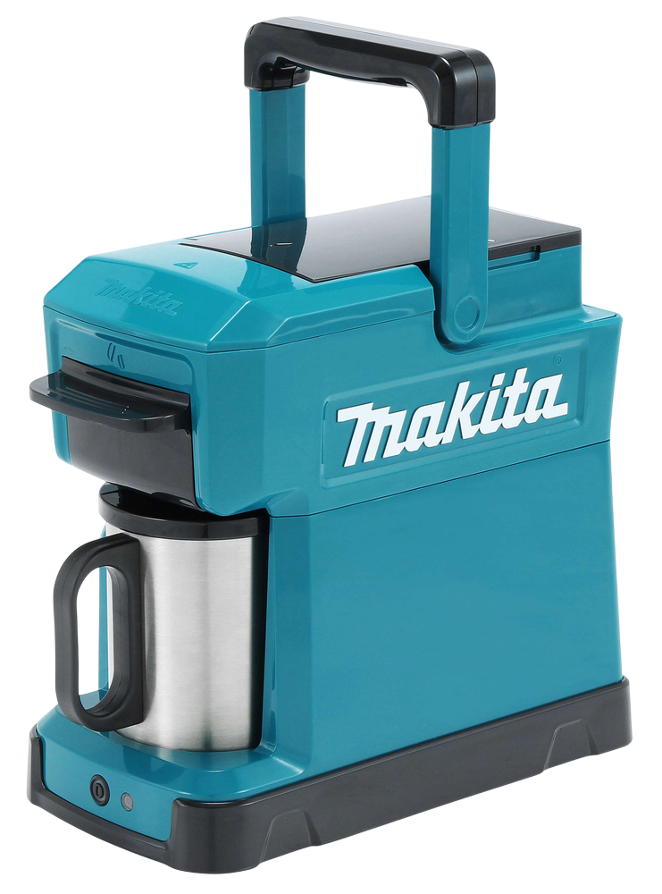
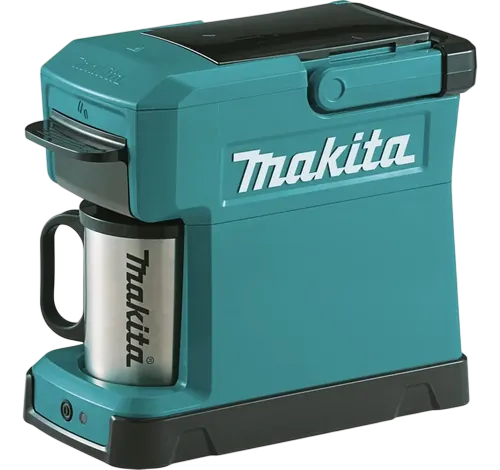

Café caliente
Café caliente en minutos, listo para arrancar o seguir la jornada.
Cordless Coffee Maker 18V LXT
Una herramienta más para acompañarte en cada jornada.
La Makita DCM501 es una cafetera inalámbrica compatible con baterías Makita LXT® de 18V, diseñada para ofrecer café caliente y rendimiento constante incluso en los entornos más exigentes.

Rendimiento en campo
Café caliente en minutos, listo para arrancar o seguir la jornada.
Alimentación con batería Makita LXT® 18V para trabajar sin tomacorrientes.
Construcción robusta para soportar obra, taller y traslados diarios.
Ideal para obras, talleres, exteriores y jornadas lejos de la base.
Modo de uso
Prepará tu café en cuatro pasos.
Colocá la batería Makita LXT® 18V para alimentar la cafetera sin cables.
Cargá el depósito y prepará el café para una extracción práctica en obra o taller.
Activá el ciclo y dejá que la DCM501 trabaje con rendimiento constante.
Tené café listo para seguir la jornada, sin depender de una cocina o enchufe.

Especificaciones técnicas
Experiencia real
"La llevo todos los días a la obra. El café sale perfecto y la batería dura muchísimo."
Usuario 1"Ideal para las jornadas largas. Es una herramienta más en mi camioneta."
Usuario 2"La uso también para camping. Práctica y resistente."
Usuario 3Variedad de colores

Azul Makita
El acabado clásico Makita: técnico, reconocible y alineado con el sistema LXT® de herramientas profesionales.
Ventaja Makita